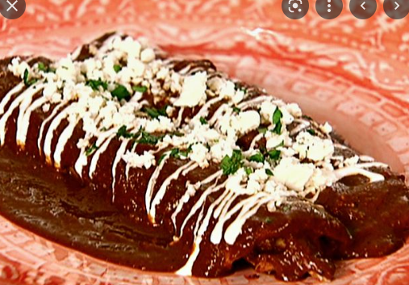

Mole Enchiladas

Description
Mole enchiladas are a Mexican favorite! The sweet & spicy chocolaty taste of ancient Mexico.
Ingredients
- Chicken
- Cheese
- Mole sauce
- Tortillas
- Toppings
- Sour Cream
- Avocado
- Cotija
- Cilantro
- Sliced radishes
Steps
- Preheat oeven to 350 degrees F
- arm corn tortillas on a hot skillet for a few seconds in each side, or fry them lightly in oil.
- Pour ¼ cup of mole sauce into the bottom of a 9×13” pan.
- Fill each corn tortilla with a handful of chicken and small sprinkle of cheese, then roll tightly, and place seam side down in the pan.
- Pour remaining mole sauce over the top.
- Bake for 20-25 minutes or until hot and bubbly.
- Remove from oven and top a drizzle of sour cream, a sprinkle of cotija cheese, cilantro and chopped avocado.
Home